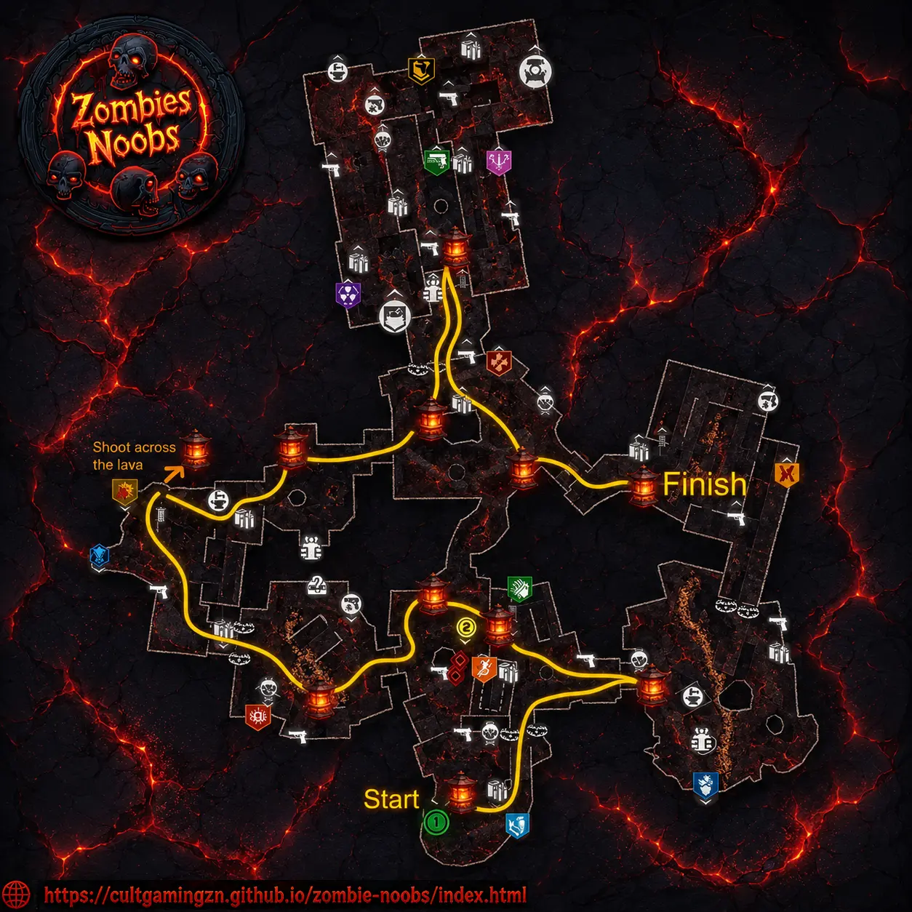
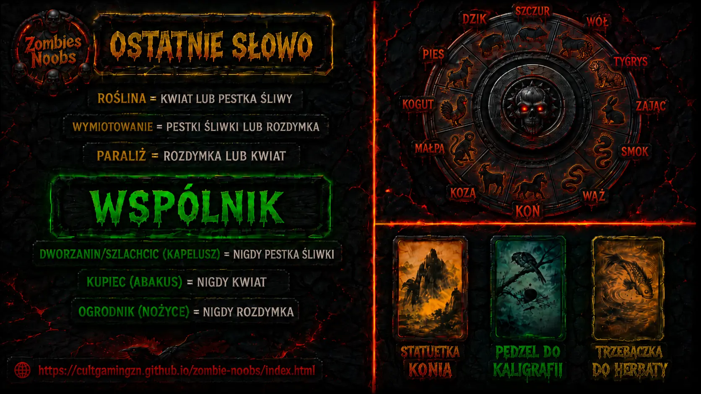

Zanim zaczniecie zabawę z morderstwem, musicie mieć moc.
Odblokuj mapę: Otwórz obie strony mapy i znajdź dwa sztandary. Jeden w Kitchens (Kuchnie), drugi w Training Area (Obszar treningowy).
Obrona: Wejdź w okrąg przy sztandarze i broń go przed zombie, aż zostanie przejęty.
Brama i Oni: Udaj się do bramy na dziedzińcu, usuń glify i wejdź do środka. Pojawi się specjalny przeciwnik Oni. Zabij go i podnieś przedmiot Shogun Hango.
Aktywacja maszyny: Włóż Shogun Hango do drzwi ze złotym kołem, wejdź na górę do World Seed (Ziarno Świata) i zabijaj zombie z fioletową aurą, aby napełnić je duszami. Gdy skończysz, pojawi się Pack-a-Punch.
To nie jest zwykła pukawka, to klucz do całej mapy.
Klatka: Kup PhD Flopper i rzuć się na brzuch pod wiszącą klatkę na dziedzińcu zamku, aby spadła. Podnieś ją i wrzuć do dowolnej głębokiej lawy.
Ślady łap: Na następnej rundzie sprawdź przejścia między lokacjami. Jeśli zobaczysz szczelinę z dymem, to tam będą ślady. Zabijaj zombie w tym miejscu, aż pojawią się ślady łap, a potem idź w kierunku, który wskazują i zabijaj kolejne truposze.
Abominacja: Gdy ślady ułożą się w krąg, rzuć tam swój granat Maneki Neko. Pojawi się boss Abominacja – pokonaj go, a kot ucieknie.
Skradanie: Kup Death Perception. Znajdź kota na skrzypiących deskach (Kuchnia lub Training Area). WAŻNE: Musisz iść kucając i omijać podświetlone deski, żeby go nie spłoszyć.
Finał broni: Zanieś kota do Pack-a-Punch, połóż na World Seed i uderzaj nasiono wręcz (Melee) pomiędzy falami uderzeniowymi. Gratulacje, masz Noman!
KROK 4: 11 Latarni
Używając Cudownej Broni, musisz zestrzelić 11 latarni na mapie w krótkim czasie.
Zacznij od spawnu, biegnij przez Flower Garden, Stables, aż do Tea Garden.
Po sukcesie w War Room pojawi się duch samuraja. Interakcja z nim odpali scenkę.

KROK 5: Śledztwo morderstwa (Główna Zagadka)
Musicie zebrać dowody, aby wskazać mordercę ojca Takeo. Całość dzieli się na 5 tablic dowodów:
PODEJRZANI:
Użyj latawca na dachu zamku, by przelecieć nad dachami. Trzymaj analog w prawo i spamuj przycisk interakcji, by złapać Maskę Lisa.
Połóż maskę na ścianie przy PhD Flopper i zagraj w "Simon Says" – zabijaj zombie w maskach w takiej kolejności, w jakiej podświetlały się te na ścianie (fale po 3, 4 i 5 masek).
Zestrzel latającą maskę w 3 miejscach: Warsztat, Zrujnowany Gabinet (Collapsed Study) i przy Elemental Pop. Odnieś dowody do Meditation Room (Pokój Medytacji).
WSPÓLNICY:
Znajdź Mystery Box z przyczepioną monetą. Rzuć w nią granatem Maneki Neko i wylosuj broń, by zdobyć Sakiewkę. Zanieś ją do spawnu.
Teraz musisz pokonać 3 specjalne zombie:
Gardener (Ogrodnik): Napełnij wiadro wodą (z kałuży w Tea Garden), podlej 3 rośliny we Flower Garden, zniszcz świecące doniczki i zabij go.
Merchant (Handlarz): Uderz w jabłko w kuchni, odejdź na minutę, wróć i zabij zombie z jabłkiem w ustach w Staging Area.
Nobleman (Szlachcic): Rzuć 3 granaty wabiące w okna nad Gatehouse. Odrzuć granaty, które w Ciebie rzuca (lub użyj atomówki - Nuke), by go zabić.
TRUCIZNY:
Zagadka zwojów: W pokoju przy PhD Flopper rozwiąż puzzle 3x3 (wszystkie zwoje muszą być wciśnięte). Podnieś tłuczek i zanieś do misy w kuchni. Zabijaj tam zombie z modem Zgnilizna Mózgu, aż napełnisz misę duszami.
Scroll Solver
ROZWIĄZANIE:
Wprowadź wzór i kliknij Rozwiąż
Zbierz składniki: Ryba Rozdymka (w szafce w kuchni), Pestka śliwki (skacz po śliwce(jabłko) w kuchni, aż zostanie sama pestka) oraz Kwiat Monkshed (użyj naładowanego strzału Cudownej Broni na belce w Training Area aby zdobyć worek, napełnij worek popiołem z lawy (przebywaj w skażonej strefie przez 30sekund, a nastpnie włóż pestke do doniczki na dziedzińcu obok budki telefonicznej, kiedy to zrobisz naładuj się przy świecącym drzewie i biegaj w kółko obok doniczki, tworząc tornado).
LOKACJE I MOTYWY:
Napraw misę do Sake w Tea Garden. Wykonaj 3 obrony misy: War Room, dach zamku i Tea Garden (tam misę ukradnie pies – dogoń go i zabij).
Zegary i Flagi: Odczytaj godzinę z zegara przy PhD Flopper.
Zabij zombie z flagami podczas fali szturmu.
Rozmieść flagi w 4 lokacjach (Spawn, Flower Garden, Dziedziniec, Stables) tak, by suma kropek na flagach zgadzała się z numerem z zegara dla danej lokacji. Podnieś Medalion z zegara.
KROK 6: Rozwiązanie morderstwa
To najtrudniejszy moment. Musisz dopasować dowody na tablicy w pokoju medytacji:
Duchy w pułapkach: Aktywuj pułapki (Spawn, Flower Garden, Dziedziniec) i zabij 15-20 zombie. Pojawi się duch, który powie Ci, kto był wspólnikiem (np. Szchlachcic, Ogrodnik lub Handlarz).
Ustawienie przedmiotów: Slot 1: Grzebień (zawsze).
Slot 2: Przedmiot wspólnika (Nożyce, Liczydło lub Kapelusz).
Slot 3: Trucizna (użyj notatek lekarza na ścianie, by sprawdzić objawy – np. paraliż, wymioty).
Slot 4: Miejsce (Koń, Pędzel lub Trzepaczka – zależy od obrazu w tle).
Slot 5: Medalion (zawsze).
Zegar Zodiaku: Ustaw tarczę, odejmując czas działania trucizny od godziny śmierci (wszystko znajdziesz w notatkach na ścianie).
Zapal kadzidła: Jeśli zrobisz to dobrze za pierwszym razem, dostaniesz katanę Path of Sorrows!

KROK 7: Boss – Smok
Wejdź w interakcję z World Seed, by przenieść się na arenę.
Faza 1: Przejmij okrąg ze sztandarem, by być nieśmiertelnym. Strzelaj w oczy smoka.
Faza 2: Przejmij dwa okręgi. Strzelaj w brzuch i skrzydła.
Faza 3: Przejmij trzy okręgi. Unikaj ognistych tornad i wykończ bestię.